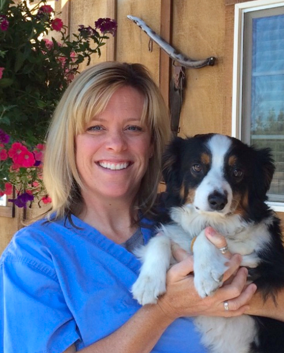
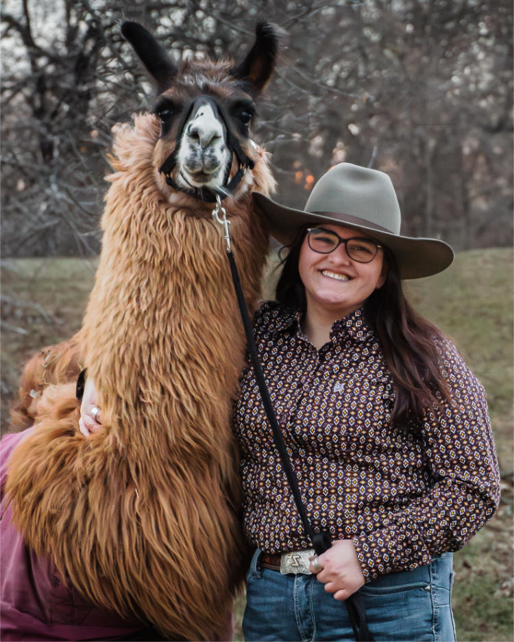
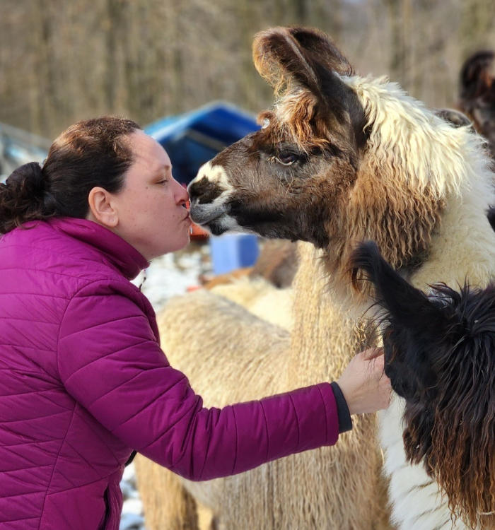
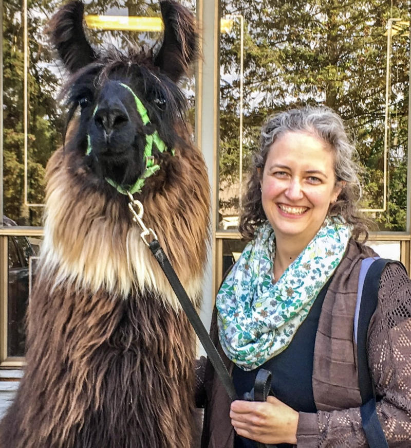

Board & Leadership
The North West Camelid Foundation is governed by a volunteer board of twelve — camelid breeders, practicing DVMs, and community leaders who give their time to advance camelid health and veterinary science.
All board members serve on the Research Committee, which evaluates grant proposals, oversees active research projects, and manages the annual scholarship program.

Board of Directors
Our board is made up of volunteers — camelid breeders, practicing DVMs, and community leaders — who share a deep commitment to advancing camelid health worldwide. All board members also serve on the Research Committee.
Research Committee
The Research Committee evaluates grant proposals, determines funding priorities, monitors project progress, and publishes results to our supporting organizations. All twelve board members serve on the Research Committee.
Committee Responsibilities
- Review and evaluate veterinary research grant proposals submitted to NWCF
- Determine annual research funding priorities in consultation with partner universities
- Monitor the progress of active research projects and funded studies
- Review and approve publication of research results to member organizations
- Oversee the NWCF scholarship selection process in coordination with OSU and WSU

Glen Pfefferkorn
President & Research Committee
A founding director of the North West Camelid Foundation, Glen has devoted decades to camelid education and medical research. He received an OSU College of Veterinary Medicine Distinguished Service Award and served on the Carlson College of Veterinary Medicine Dean's Advisory Council. Two endowments bear his name — including the only endowed Camelid Professorship in the world — established through Glenmor Forest Llamas near Dallas, Oregon.

Patrick Long, DVM
Vice President & Research Committee
A practicing veterinarian in Corvallis, Oregon, Dr. Long has worked with llamas and alpacas since 1982. A 1976 Kansas State University graduate, he is co-author of the Llama and Alpaca Neonatal Care book and a frequent speaker at national and international camelid meetings. His areas of focus include herd health management, nutrition, and reproduction.

Mary Jo Walker
Secretary & Research Committee
Mary Jo brings an owner's perspective to the board after years of running Daffodil Hill Llamas and Alpacas, where she owned as many as 50 animals at one time. A former President of the Willamette Valley Llama Association, she has served as Foundation Secretary and actively organizes educational seminars and fundraising events for camelid owners.

Peggy Gresham
Treasurer & Research Committee
Peggy began The Llama Collection in 1988 and has been a cornerstone of the camelid community ever since. She co-managed The Llama Affaire show for 25 years, joined the Medical Research Committee in 1996, and has served over 30 years as a 4-H Leader — earning induction into the WA State 4-H Hall of Fame. She currently serves on the WA State 4-H Fairboard.

Ann Dockendorf
Board Member & Research Committee
Ann and her husband established Aragon Alpacas in 2005 near Eugene, Oregon. A Texas A&M graduate in art education, she brings both a breeder's knowledge and a passion for fiber arts to the board. She is actively involved in educating and mentoring alpaca owners through local camelid associations and hosts farm tours to share her knowledge with the public.

Olin Allen
Board Member & Research Committee
A retired wildlife biologist who has worked for parks and wildlife agencies and The Nature Conservancy, Olin brings a scientific lens to camelid health. He served as state rescue coordinator for Southwest Llama Rescue in Colorado before moving his herd of 18 llamas to the Willamette Valley in 2014. He remains active as a "Citizen Scientist" with a particular interest in geriatric care.

Dr. Scot Lubbers
Board Member & Research Committee
Dr. Lubbers owns Amazia Veterinary Service in Brush Prairie, Washington. A 1984 OSU graduate, he has been one of the region's camelid specialists since opening his practice in 1988 and is a frequent speaker at camelid events. He serves as the NWCF representative on the Lama Medical Research Group and donates many hours to Extension educational programs and 4-H.

Dr. Grace Montgomery
Board Member & Research Committee
A large animal veterinarian in southwest Washington, Dr. Montgomery earned her DVM from Washington State University in 2024. She was a grateful recipient of the NWCF scholarship, and during veterinary school authored the 1st place paper for the class of 2024 covering Parelaphostrongylus tenuis in North American camelids. Her professional interests include small ruminant parasitology and dairy management.

Dr. Rachel Oxley
Board Member & Research Committee
A 1998 OSU College of Veterinary Medicine graduate, Dr. Oxley completed an internship with a camelid specialist in Central Oregon before establishing her own practice. Camelids make up a large part of her caseload, and her interest in the field was sparked by the strong emphasis on camelid medicine and research she experienced at OSU.

Jessie Munson
Board Member & Research Committee
A 10-year Washington State 4-H Llama project alumna, Jessie has competed and placed at local, regional, and national show levels, winning her first national championship in 2021. She owns one of the only Pet Partners registered therapy llamas in Wisconsin and is active in fiber arts, earning Grand Champion at the Oregon Flock & Fiber Festival. She is currently a Ph.D. candidate in political science at the University of Wisconsin-Madison.

Dr. Charlene Arendas
Board Member & Research Committee
Dr. "Char" Arendas has been raising, training, and showing llamas for nearly 30 years, starting with her first 4-H llama at age 12 in northeast Ohio. She earned her DVM from The Ohio State University in 2008 and co-owns a seven-doctor small animal practice in Warren, Ohio. She also serves on boards for the Ohio River Valley Llama Association and the Llama Fiber Cooperative of North America.

Kendara VanNorman
Board Member & Research Committee
Kendara began volunteering at a local llama farm at age 13 and currently keeps a small herd of four female llamas. A University of Washington graduate in Environmental Science, she works as a licensed veterinary technician in an internal medicine specialty practice. She brings a unique perspective as a small herd hobby farmer with a background in both science and hands-on veterinary care.